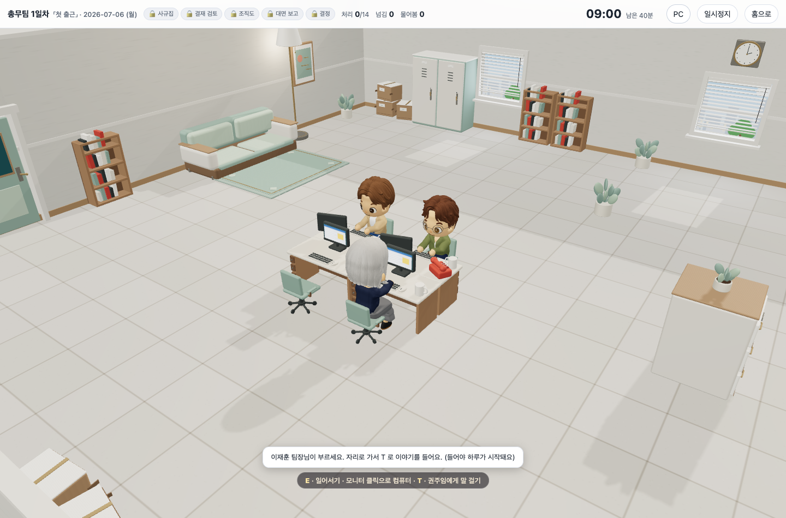
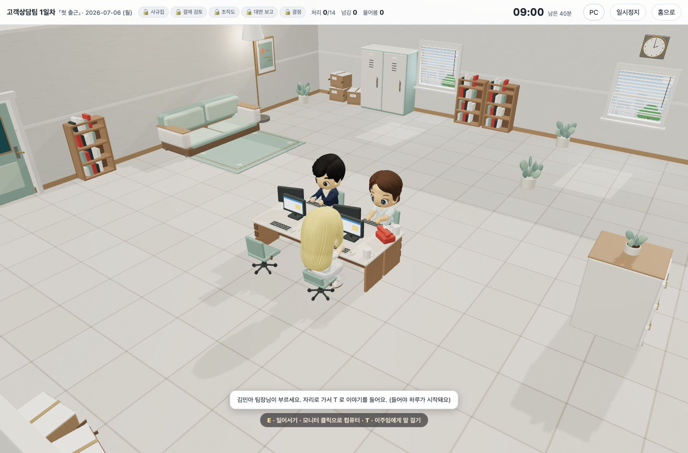
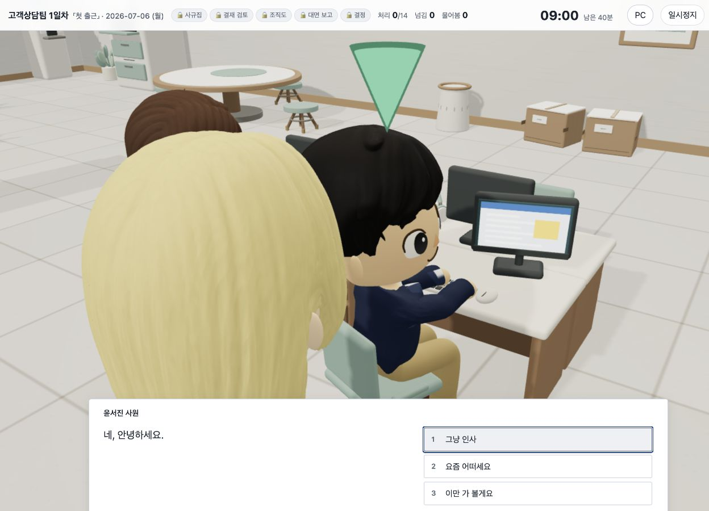
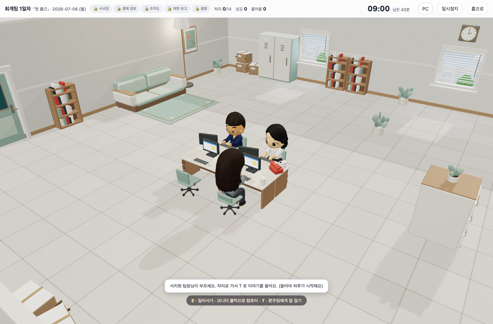

01 / 직무 선택어떤 일을 하는지,
어떤 일을 하는지,
직접 경험해 보세요.
고객상담부터 기획, 회계, 구매까지. 안내받은 직무에서 요청과 자료를 살펴보며, 그 일이 어떤 판단을 필요로 하는지 경험합니다.
참여할 직무는 안내받은 과정에 따라 정해집니다.

직무 경험과 자기 이해를 연결하는 개인 실습

01 · 직무 시뮬레이션 경험
고객상담부터 기획, 회계, 구매까지. 안내받은 직무에서 요청과 자료를 살펴보며, 그 일이 어떤 판단을 필요로 하는지 경험합니다.
참여할 직무는 안내받은 과정에 따라 정해집니다.

요청의 핵심과 마감을 확인하고, 자료와 규정을 살펴봅니다. 모르는 내용은 담당 동료에게 묻고, 회신과 처리 순서에 자신의 판단 근거를 담습니다.

작성한 답변과 업무 수행 기록에 기반한 피드백을 확인합니다. 어떤 근거로 판단했는지, 다음에는 무엇을 바꾸면 좋을지 돌아보고 진로·취업 준비에 활용할 경험을 정리합니다.
결과는 게임 안에서 관찰된 수행 기록에 따라 제시됩니다.

02 · 활동과 배움
필요한 정보를 빠뜨리지 않고 질문하고 답하는 연습.
규정과 수치를 확인하고 처리 방법을 정하는 연습.
도움이 필요한 순간에 적절한 동료와 담당자를 찾는 연습.
선택의 이유와 다음 행동을 구체적으로 정리하는 연습.
03 · 7일차까지의 업무 과정
처음에는 맡은 업무의 맥락을 이해하는 데서 시작합니다. 진행하면서 여러 자료와 요청을 함께 살피고, 마지막 7일차에는 정보를 종합해 자신의 결정을 정리합니다.
요청을 읽고 자료와 규정을 찾는 방법을 연습합니다.
여러 조건을 함께 살피고, 다른 사람에게 필요한 내용을 확인합니다.
자료를 종합해 판단의 근거를 설명하고 자신의 업무 경험을 돌아봅니다.
고객상담, 물류, 회계, 총무, 채용, 기획, 품질관리, 홍보, 교육, 구매. 직무에 따라 만나는 업무와 살펴볼 자료가 달라집니다.
참여할 직무는 안내받은 과정에 따라 정해집니다.
04 · 결과와 수업
수행한 업무와 작성한 답변을 바탕으로 결과를 확인합니다. 어떤 판단을 했고 무엇을 보완하면 좋을지, 자신의 기록에서 살펴볼 수 있습니다.
WORK SIM은 NCS 직업공통능력(2025.12)의 7개 영역·21개 하위능력을 기준으로 게임 안에서 나타난 수행을 정리합니다. 관찰된 기록에 따라 결과를 제시하며, 모든 하위능력에 점수를 부여하는 것은 아닙니다.
활동 기록을 돌아보며 진로·취업 준비에 필요한 경험을 구체적으로 설명하는 글쓰기와 연결할 수 있습니다.
각자 경험한 직무와 판단을 돌아보고, 진로·취업 준비에 활용할 경험을 정리합니다.
강사가 참여 방법과 직무를 안내합니다.
각자 사무실에서 업무를 수행하고 판단을 기록합니다.
업무 기록과 피드백에서 강점과 보완점을 살펴봅니다.
같은 상황에서 서로 어떤 근거로 결정했는지 이야기합니다.
WORKSIM은 개인이 진행하는 직무 시뮬레이션입니다. 수업에서는 각자 플레이한 뒤 경험과 판단을 함께 이야기할 수 있습니다. 협동 과정은 추가 버전인 CO-WORK에서 제공합니다.
로그인 없이 소개와 3D 사무실을 볼 수 있습니다. 업무 제출·채점 체험은 점검을 마친 뒤 안내합니다.
게임 안의 1일차부터 7일차까지 이어지는 과정입니다. 실제 수업 일정은 교육 구성에 따라 정합니다.
수행한 업무와 작성한 답변을 바탕으로 자신의 판단에서 잘한 점과 보완할 점을 돌아볼 수 있습니다.
게임 안의 요청과 자료, 규정을 살펴보며 업무를 진행합니다. 수업에서는 사전 안내와 회고를 함께 구성할 수 있습니다.
참가 인원, 수업 일정, 다루고 싶은 주제를 알려 주시면 프로그램과 운영 방법을 안내드립니다.
소개와 3D 사무실은 로그인 없이 둘러볼 수 있습니다.
업무 체험과 채점은 현재 점검 중입니다. 사무실 둘러보기에서는 업무 제출과 평가가 진행되지 않습니다.